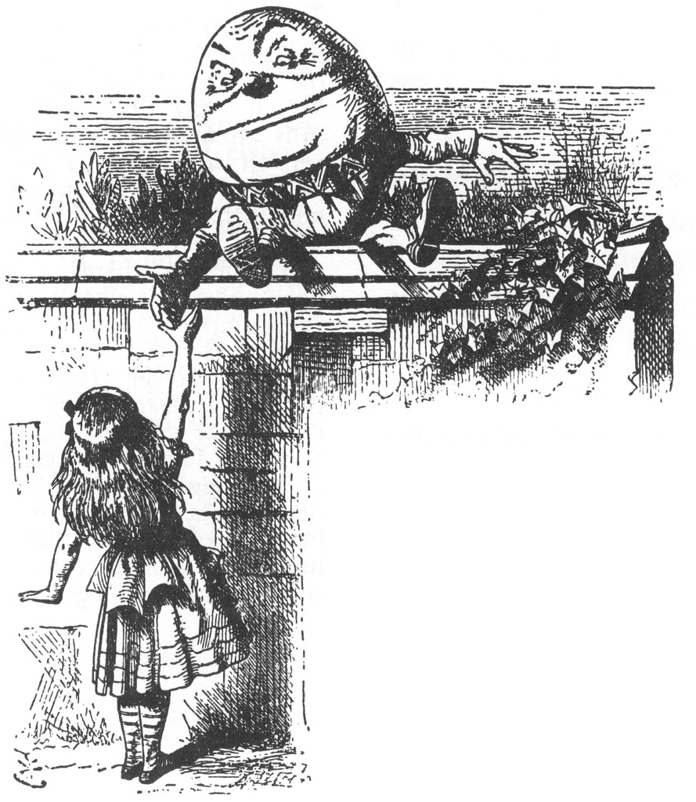
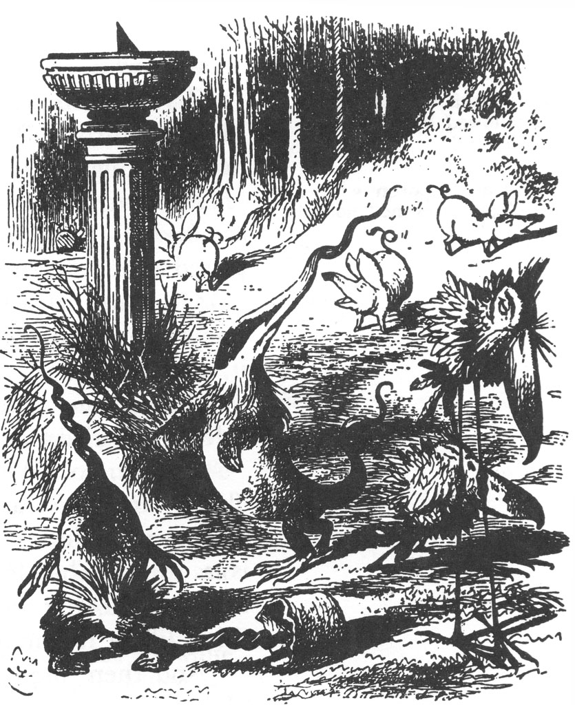
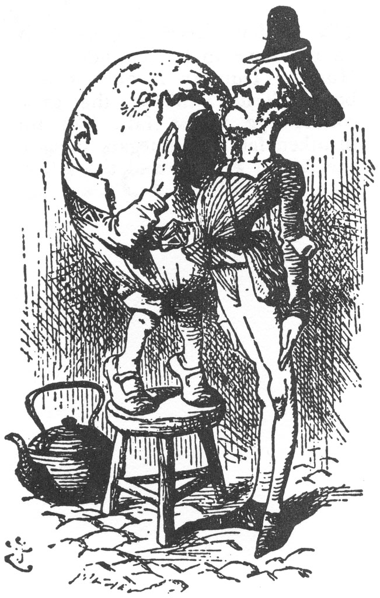

Ne var ki yumurta gittikçe büyüyor, büyüyor ve daha çok insan şeklini alıyordu: Alice yanına biraz daha yaklaşınca gözlerinin, burnunun ve ağzının olduğunu fark etti; yanına biraz daha yaklaşınca da bunun YUMURTA ADAM’ın ta kendisi olduğunu anladı. ”Bu ondan başkası olamaz!” dedi kendi kendine. “Adı bütün yüzüne yazılmışçasına eminim bundan!”
Adı, gerçekten de o kocaman suratına yüz kez kazınmış olmalıydı. Yumurta Adam, yüksekçe bir duvarın üzerine tıpkı bir Türk gibi bağdaş kurmuş oturuyordu... duvar o kadar dardı ki, nasıl olup da dengesini yitirmediğine şaşırıp kaldı Alice... gözlerini ters yöne dikip öylece baktığına ve onu hiçbir şekilde fark etmediğine bakılırsa, doldurulmuş bir figür olmalıydı.
“Tıpatıp bir yumurtaya benziyor!” diye bağırdı Alice; her an düşebileceği endişesi içinde, yakalamaya hazır şekilde kollarını açmış öylece bekliyordu.
“Çok can sıkıcı!” dedi Yumurta Adam, uzun bir sessizliğin ardından gözlerini Alice’ten kaçırarak. “Yumurta diye adlandırılmak... çok!”
“Yumurtaya benzediğinizi söyledim, efendim,” diye açıkladı Alice kibarca. “Hem bilirsiniz bazı yumurtalar da çok tatlıdır,” diye ekledi, açıklamasının bir çeşit övgüye dönüşeceğini umarak.
“Bazı insanların,” dedi Yumurta Adam, her zamanki gibi gözlerini Alice’ten kaçırarak, ‘‘bir bebeğinki kadar bile akılları olmuyor!”
Alice buna karşılık ne söyleyeceğini bilmiyordu; hem buna bir konuşma bile denmez diye düşündü, çünkü Yumurta Adam ona dönerek bir şey dememişti; aslında son söylediklerini bir ağaca hitaben söylemişti... bu yüzden Alice yerinde durup usulca aşağıdaki dizeleri kendi kendine tekrarladı...
“Yumurta Adam bir duvara oturmuş,
Sonra da bir güzel düşmüş.
Kral’ın atlarıyla adamları bir olmuşlar,
Ama Yumurta Adam’ı bir türlü tekrar eski yerine koyamamışlar.”
“Bu son dize şiir için fazla uzun kaçtı,” dedi Alice, Yumurta Adam’ın kendisini duyduğunu unutup neredeyse bağırarak.
“Öyle kendi kendine konuşup durma da,” dedi Yumurta Adam, ilk kez ona dönüp bakarak, “bana ismini ve ne iş yaptığını söyle.”
“Adım Alice, ama...”
“Zaten adın aptalca!” dedi Yumurta Adam, hemen atılıp sözünü keserek. “Ne demekmiş?”
“Bir adın illa da anlamı mı olmalı?” diye sordu Alice kuşku içinde.
“Tabii ki olmalı,” dedi Yumurta Adam, hafiften bir kahkaha atarak: “Ben adımı şeklimden almışım... ve bu da çok güzel bir şekil. Seninki gibi bir adla, hemen hemen her şekilde olabilirsin.”
“Niye orada öyle yapayalnız oturuyorsunuz?” dedi Alice, tartışma başlatmaya pek istekli olmadığından.
“Yanımda kimse yok da ondan!” diye bağırdı Yumurta Adam. “Bunun cevabını bilmediğimi mi sanıyorsun? Başka soru sor.”
“Yerde daha güvende olacağınızı düşünmüyor musunuz?” diye devam etti Alice, başka bir bilmece sormak niyetinde değildi, sadece bu tuhaf yaratık için iyi niyetli bir kaygı duymuştu. “O duvar çok dar da.”
“Bunlar nasıl da kolay bilmeceler böyle!” diye homurdandı Yumurta Adam. “Tabii ki düşünmüyorum. Hem, olur ya düşecek olsam... ki buna imkân yok... ama düşecek olsam...” Tam o anda dudaklarını büzdü, öyle ciddi ve vakur görünüyordu ki, Alice kahkahalarını zar zor tutabildi. “Eğer düşecek olursam,” diye sözlerine devam etti, “Kral bana söz verdi... ha, ha, ha şimdi yüzün kızaracak mı? Bunu söyleyeceğimi sanmıyordun di mi?.. Kral bana söz verdi... kendi ağzıyla... bütün... bütün...” ”Bütün atlarını ve adamlarını göndermeye,” diye araya girdi Alice akılsızlık edip de.
“AH, bu çok kötü bir şey!” diye bağırdı Yumurta Adam aniden öfkeye kapılarak. “Kapılardan... ağaçların arkalarından... bacalardan bizi dinliyordun demek ki... Yoksa imkânı yok bunu bilemezdin!” ”Gerçekten dinlemedim!” dedi Alice çok uysalca. “Bunları bir kitaptan biliyorum.”
“Tamam, o zaman. Bir kitapta bu türden şeyler yazabilirler,” dedi Yumurta Adam daha sakinleşerek. “İngiliz Tarihi dediğimiz şey, bundan başka bir şey değil. Şimdi, sen bana bak bana! Ben var ya, gerçek bir Kral ile konuşmuş biriyim ben. O benim işte: Bir daha böyle bir şey görmene imkân yok. Bak kibirli biri olmadığımı göstermek için benimle tokalaşmana izin veriyorum!” Ağzını neredeyse bir kulağından ötekine kadar açarak sırıttı ve öne doğru eğilirken de (az kaldı duvardan düşecekti) Alice’e elini uzattı. Alice elini ona uzatırken bir süre onu endişeyle izledi. “Bu şekilde daha fazla gülecek olursa, kafasının arkasında ağzının iki yanı bir araya gelecek,” diye geçirdi aklından. “İşte o zaman kafasına ne olur bilmem. Korkarım ki kafası yerinden kopacak!”
“Evet, bütün atlarını ve bütün adamlarını,” diye devam etti Yumurta Adam. “O anda beni hemen yerden kaldıracaklar, bunu yapacakları Her neyse, bu sohbet biraz hızlı gidiyor. Söylediğin sondan bir önceki söze geri dönelim.”
“Kusura bakmayın, ama en son ne söyledim, anımsamıyorum,” dedi Alice kibarca.
“O zaman yeniden başlayabiliriz,” dedi Yumurta Adam. “Bu sefer konu bulma sırası ben de... (“Sohbetten sanki oyunmuş gibi söz ediyor!” diye düşündü Alice.) “İşte sana bir soru. Kaç yaşındayım demiştin?”
Alice çok kısa bir hesaplama yaptı ve “yedi yaş, altı ay,” dedi. “Yanlış!” diye bağırdı Yumurta Adam zafer kazanmışçasına. ”Ağzından böyle bir kelime çıkmamıştı.”
‘“Kaç yaşındasın,' demek istediğinizi sanmıştım,” diye bir açıklama yaptı Alice.
“Onu demek istemiş olsaydım, onu derdim/’ dedi Yumurta Adam.
Alice yeni bir tartışma başlatmak istemiyordu, bu yüzden hiç cevap vermedi.
“Yedi yaş, altı ay,” diye tekrarladı Yumurta Adam düşünceli düşünceli. “Pek keyifsiz bir yaş. Tavsiyemi istemiş olsaydın, yedide bırak derdim... ama artık çok geç.”
“Büyüme konusunda sizden hiçbir öğüt istemem,” dedi Alice öfkelenerek.
“Çok mu gururlusun?” diye sordu diğeri.
Alice bu söz karşısında daha bir öfkelenmişti. “Demek istiyorum ki,” dedi. “Bir insanın elinden büyümemek gelmez.”
“Bir insanın elinden gelmeyebilir,” dedi Yumurta Adam. “Ama iki insan yapabilir. Doğru dürüst bir destekle yedide durabilirdin.”
“Bu ne güzel bir kemer,” dedi Alice aniden. (Yaş konusunda yeterince konuştuklarını düşünüyordu. Konuşma konularını gerçekten sırayla seçeceklerse, şimdi sıra ondaydı.) “En azından,” diye kendini düzeltti, bir kez daha düşününce, “güzel bir boyunba-ğı demem gerekirdi... yok hayır bir kemer demek istemiştim... ah affedersiniz!” diye ekledi bir an dehşete kapılarak, çünkü Yumurta Adam hepten gücenmişti. Alice keşke bu konuyu seçmeseydim diye düşünmeye başladı, “Neresinin boynu neresinin beli olduğunu bir bilebilseydim!”
Yumurta Adam bir iki dakika bir şey söylemese de çok kızgın olduğu açıktı. Konuşmaya yeniden başladığında da ağzından derin bir hırlama sesi çıktı.
“Bir insanın boyunbağı ile kemer arasındaki farkı bilmemesi yok mu ya,” dedi sonunda, “İnsanı... en çileden çıkaran... şey de bu işte.”
“Biliyorum, bu benim cahilliğimden,” dedi Alice oldukça alçakgönüllü bir şekilde, öyle ki Yumurta Adam merhamete gelmişti.
“Bu bir boyunbağı, çocuk ve dediğin gibi güzel bir boyunbağı. Beyaz Kral ve Kraliçe’nin hediyesi bana. Tamam mı?”
“öyle mi?” dedi Alice, bütün olanlardan sonra güzel bir konu seçtiği İçin oldukça mutluydu.
“Bunu onlar bana hediye etti,” diye sözlerine devam etti Yumurta Adam düşünceli bir şekilde ve bacak bacak üstüne atıp ellerini dizlerinde kavuşturdu, “... bir doğmadığım gün armağanı olarak.”
“Af buyurun!” dedi Alice şaşkın şaşkın.
“Sana kızmadım ki,” dedi Yumurta Adam.
“Şey demek istiyorum ki, doğmadığım gün armağanı ne demek?”
“Tabii ki doğum günü olmayan bir günde verilen bir hediye demek.”
Alice bir süre düşündü. “Ben en çok doğum günü armağanlarını severim,” dedi sonunda.
“Daha neden bahsettiğini bile bilmiyorsun!” diye bağırdı Yumurta Adam. “Bir yılda kaç gün var?”
“Üç yüz altmış beş,” dedi Alice.
“Peki, kaç doğum günün var?”
“Bir.”
“Üç yüz altmış beşlen biri çıkarırsan, ne kalır geriye?”
“Üç yüz altmış dört, tabii ki.”
Yumurta Adam pek kuşkulu görünüyordu. “İşlemi kâğıt üzerinde görmek isterdim,” dedi.
Alice not defterini çıkarıp da işlemi onun için yaparken gülümsemeden edemedi.
365
1
364
Yumurta Adam, defteri alıp çok dikkatlice baktı. “Doğru gibi geliyor bana...” diye söze başladı.
“Defteri ters tutuyorsunuz,” diye araya girdi Alice.
“Kesinlikle haklısın!” dedi Yumurta Adam neşeyle Alice defteri düzelttiği sırada. “Bana da biraz tuhaf gelmişti. Ha, ne diyordum, işlem doğru gibi geliyor bana... yine de iyice gözden geçirmek için şu an zamanım yok... bu gösteriyor ki doğmadığın gün armağanı almak için üç yüz altmış dört gün var...”
“Kesinlikle,” dedi Alice.
“Biliyorsun ki doğum günü hediyesi için sadece bir günün var. Bu şan ve şerefi de sana bağışlıyorum!”
‘“Şan ve şeref ile ne demek istediğinizi anlamadım,” dedi Alice.
Yumurta Adam küçümseyerek gülümsedi. “Tabii ki anlamazsın... ben sana söyleyinceye değin de anlamayacaksın. Demek istiyorum ki, ‘savın ne hoş mat edildi!’”
“Ama ‘şan ve şeref bir savın hoş bir şekilde mat edilmesi anlamına gelmez ki,” diye itiraz etti Alice.
“Ben bir kelimeyi kullandığımda,” dedi Yumurta Adam oldukça horlayan bir ifadeyle, “hangi anlamı kastetmesini istiyorsam, o anlamı kasteder... ne bir fazlası ne bir eksiği.”
“Sorun,” dedi Alice, “sözcüklere başka anlamlar yükleyip yükleyeni eyeceğin iz.”
“Sorun,” dedi Yumurta Adam, “hangisinin efendi olacağıdır... işte hepsi bu.”
Alice’in kafası, ağzından tek bir sözcük çıkamayacak kadar karışmıştı, bunun üzerine Yumurta Adam yeniden söze koyuldu. “Hepsinin huyu suyu farklı, bazıları... özellikle fiiller içlerinde en kibirli olanları... sıfatlara istediğinizi yapabilirsiniz, ama fiillerle imkânsız... Neyse ki ben hepsiyle baş edebilirim! Çözülmezlik! İşte bütün söyleyeceğim bu!”
“Lütfen söyler misiniz?” dedi Alice, “Bu sözcüğün anlamı ne?”
‘‘İşte şimdi akıllı bir çocuk gibi konuştun,” dedi Yumurta Adam oldukça mutlu gözükerek. ‘Çözülmezlik’ ile bu konuda yeterince konuştuğumuzu ve bundan sonra ne yapmak istediğini belirtirsen çok daha iyi olacağını, çünkü ömrünün geri kalan kısmını burada geçirmeye niyetli olmadığını sandığımı söylüyorum.”
“Bir sözcüğe bu kadar çok anlam yüklemek, doğrusu iyi iş,” dedi Alice düşünceli bir şekilde.
“Bir sözcüğe ne zaman çok iş yüklesem,” dedi Yumurta Adam, “ona her zaman fazladan ödeme yaparım.”
“Ya!” dedi Alice. Artık başka bir şey söyleyebilecek bir halde değildi.
“Ah, Cumartesi geceleri nasıl da etrafıma doluşuyorlar, görmelisin doğrusu,” diye sözlerine devam etti Yumurta Adam, başını bir yandan öteki yana vakur bir şekilde sallarken. “Ücretlerini almak için yani.”
(Alice, onlara neyle ödeme yaptığını sormaya kalkışmadı; bu yüzden ben de size söyleyemem.)
“Sözcükleri açıklama konusunda epey usta gözüküyorsunuz, efendim,” dedi Alice. “‘Cabbaroku’ şiirini bana lütfedip açalar mısınız?”
“Bir oku bakalım,” dedi Yumurta Adam. “Yazılan her şiiri açıklayabilirim... hattâ daha yazılmamış olanlarını bile.”
Bu Alice’i umutlandırmıştı, bunun üzerine ilk kıtayı okudu.
“Çayaltıydı sümrak povuklar
Dönenip delgiliyordu emeci
Hepten sersizdi papkanlar
İniminim donbuzlarsa böğaksırıcı.”
“Şimdilik bu yeterli,” diye araya girdi Yumurta Adam. “Burada çok zor sözcükler var. ‘Çayaltı’ öğleden sonra saat dört civarı demek... beş çayı öncesi, bir de akşama hazırlık için et kızartılan tavanın üzerine konduğu altlık.”
“Bu çok iyi,” dedi Alice, “Peki ya ‘sümrak’ ?”
“Pekala, ‘sümrak, sümüksü ve kıvrak,’ demek. Kıvrak ‘hareket-ı.” li’ ile aynı anlamda. Kaynaşık kelime gibi bir şey... Bir sözcüğün içine iki sözcüğün anlamı sığdırılmış.”
“Şimdi anlıyorum,” dedi Alice düşünceli düşünceli, “peki ‘povuk’ nedir?”
“Onlar da porsuk gibi bir şey... kertenkele gibi... burgu gibi bir şey işte.”
“Çok tuhaf yaratıklar olmalılar.”
“Öyleler de,” dedi Yumurta Adam. “Yuvalarını güneş saatlerinin altına yaparlar... Peynirle de beslenirler.”
“Peki ya ‘dönenmek’ ve ‘delgilemek’ ne demek?”
“‘Dönenmek’ tıpkı bir cayraskop gibi dönüp durmak demek. “Delgilemek” de delgi gibi çukurlar açmak.”
“‘Emeç’ de tahminimce güneş saatinin etrafındaki emilimi yüksek otlak alan,” dedi Alice, kendi yaratıcılığı karşısında hayretlere kapılarak.
“Evet öyle. Öyle deniliyor, çünkü bilirsin, güneş saatinin önünde ve arkasında uzunca bir yol boyunca ilerleyip gider...”

“Güneş saatinin her iki yanından ötelere doğru uzanıp gider,” diye ekledi Alice.
“Aynen öyle. ‘Sersiz’ ise ‘sefil ve fersiz’ demek (İşte sana başka bir kaynaşık sözcük). ‘Papkan’ da, zayıfça, telekleri her bir yandan dışarı fırlamış, hırpani görünümlü bir kuş, canlı bir saçaklı paspasa benziyor.”
“Peki ya ‘iniminim donbuz’?” diye sordu Alice, “Eğer size çok fazla zahmet vermiyorsam?”
“Eh, ‘donbuz’ bir çeşit yeşil domuz, ama ‘iniminim’ ne demek bilmiyorum. Sanırım ‘in’ sözcüğünden türemiş... yollarını yitirdiklerini gösteriyor işte.”
“‘Böğaksırıcı’ ne demek öyleyse?”
“Pekala, ‘böğaksırıcı’ böğürmek ile arada aksırıp ıslık çalmak demek; neyse bu sesi belki duyarsın da... aşağıdaki şu koruda... bu sesi bir duysan çok hoşuna gidecek. Bu zor şeyleri kim sana okuyor böyle?”
“Bunu bir kitapta okumuştum,” dedi Alice. “Ama bundan daha kolay şiirler de biliyorum... Sanırım Tumbadik okumuştu.”
“Söz şiirden açılmışken, hani,” dedi Yumurta Adam kocaman ellerinden birini uzatarak. “Diğer insanlar gibi ben de şiir okuyabilirim. Bu konuya girecek olursak...”
“Ah, yo bu konuya girmeye hiç gerek yok!” dedi Alice telaşla, başlamasına engel olabileceğini ümit ederek.
“Okuyacağım parça,” diye devam etti Yumurta Adam, Alice’in sözlerini pek dikkate almadan, “tamamıyla sen eğlenesin diye yazılmıştır.”
Bu durumda Alice şiiri dinlemesi gerektiğini düşündü ve “Teşekkür ederim,” dedi oldukça üzülerek.
“Bembeyazken kışın her bir tarla Sevinesin diye söylendi bu şarkı anla...
Yalnız ben şarkı olarak söylemiyorum,” diye açıklama yaptı Yumurta Adam.
“Söylemediğinizi görüyorum,” dedi Alice.
“Şarkıyı söyleyip söylemediğimi görebiliyorsan, çoğu kişiden keskin gözlerin var demektir,” dedi Yumurta Adam sert bir ifadeyle. Alice sesini kesmişti.
“Yeşilken baharda ormanlar böyle Anlatayım bari ne demek istediğimi şöyle.”
“Çok teşekkür ederim,” dedi Alice.
“Uzunken günler böyle yazları Anlarsın belki bu şarkıyı:
Sarıyken böyle yapraklar sonbaharda Alıp kâğıdı kalemi eline yazıversen sen de.”
“Bu kadar uzun bir şarkıyı hatırlarsam yazarım,” dedi Alice. “Böyle şeyler söylemene hiç gerek yok,” dedi Yumurta Adam. ”Söylediklerinde bir anlam yok, üstelik beni sinirlendiriyorlar da.
Haber saldım balıklara 'Dileğim işte budur,’ dedim onlara.
Denizin o mini mini balıkları,
Geliverdi hemen cevapları.
Miniklerin cevabı şuydu ki:
‘Yapamayız efendim bu işi çünkü...’”
“Kusura bakmayın ama pek anlamadım,” dedi Alice.
“Biraz sonra kolaylaşıyor,” dedi Yumurta Adam.
“Yeniden haber saldım onlara İtaat etmeniz sizin hayrınıza.
Sırıttılar önce cevap verdiler şöyle:
‘Vay, bu ne öfke böyle!'
Bir dedim olmadı, iki dedim olmadı,
Hiçbiri öğüdümü dinlemedi.
Bir demlik aldım gıcır gıcır,
Yapacağım işlere pek yaraşır.
Hop indi hop kalktı kalbim yerinden Doldurdum demliği tulumbadan.
Derken birisi geldi ve dedi ki,
‘Seninkiler değil mi şu yataktaki?’
Dedim ki ona alenen;
‘Uyandır onları hemen.’
Ona düpedüz bağırdım;
Gidip kulağına haykırdım.”
Yumurta Adam, bu dizeleri tekrarladığı sırada sesini çığlık atarcasına yükseltmişti; Alice ürperti içerisinde, “Doğrusu hiçbir şey için ulak olmak istemezdim!” dedi.
“Ne ki ulak resmi ve kibirliydi,
Dedi ki ‘Böyle bağırmana hiç gerek yoktu!'
öyle kibirli ve resmiydi ki;
Dedi ki, ‘Gidip uyandırırım onları ne var ki...’
Raftan bir tirbuşon kaptım,
Tek başıma onları uyandırmaya gittim.
Kapı kilitliydi oraya vardığımda,
Çektim çekiştirdim, vurdum vuruşturdum.
Derken kapı açılmış bir de baktım ki!
Hadi bir çevireyim dedim tokmağı, ne var ki...”
Uzun bir sessizlik oldu.
“Hepsi bu mu?” diye sordu ürkerek Alice.
“Hepsi bu,” dedi Yumurta Adam. “Güle güle.”
Bu çok ani oldu diye düşündü Alice; gitmesi gerektiğine dair böyle bir imadan sonra, orada kalmasının hiç de yakışık almayacağını düşündü. Bunun üzerine elini uzattı ve “Bir daha görüşünceye değin hoşçakalın!” dedi olabildiğince neşeli bir şekilde.
“Yeniden karşılaşsak bile, seni tanıyamam,” diye karşılık verdi Yumurta Adam hoşnutsuz bir ses tonuyla, tokalaşmak üzere parmaklarından birini uzatarak. “Sen de tıpkı diğer insanlar gibisin,” dedi.
“İnsanlar genellikle yüzlerinden tanınırlar,” dedi Alice düşünceli bir ses tonuyla.
“İşte benim yakındığım şey de bu ya,” dedi Yumurta Adam. “Senin yüzün de herkesinki gibi... iki göz, şöyle...” (başparmağıyla havada gözlerin yerini işaret ediyordu) “ortada bir burun, altında bir ağız. Hep aynı. Örneğin burnun iki yanında iki gözün olsaydı... ya da ağzın tepende olsaydı... bu belki bir işe yarardı.”
“Ama o kadar da güzel olmazdı,” diye Alice karşı çıktı ona. Fakat Yumurta Adam sadece gözlerini yumdu ve “Dene de gör,” dedi.
Alice, acaba bir kez daha konuşur mu diye bir dakika bekledi, ne var ki Yumurta Adam ne gözünü açtı, ne de onu dikkate aldı; Alice, bir kez daha “Hoşçakal!” dedi ve buna karşılık alamayınca, sessizce oradan uzaklaştı; giderken kendi kendine, “Bütün bu yetersizlikleriyle (bunu yüksek sesle söylemişti, çünkü böylesine uzun bir sözcüğü söylemek büyük bir teselliydi). “Bütün bu yetersizlikleriyle karşıma çıkıp duran bu insanlar...” Alice cümlesini bir türlü bitiremedi, çünkü koru müthiş bir sarsıntıyla sarsılıyordu.